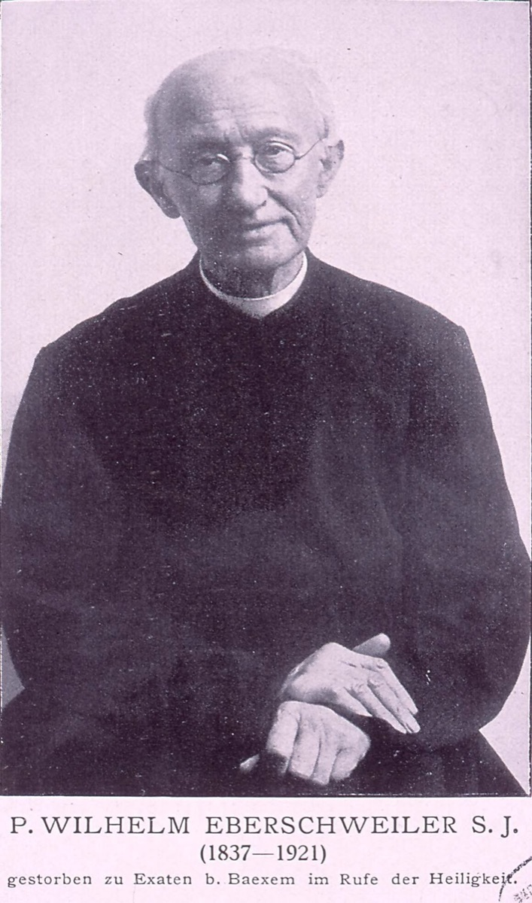

Časni sluge Božji
Svećenik
Časni sluga Božji Vilim Eberschweiler
1837. – 1921.
Njemački isusovac iz Saarske gotovo je pola stoljeća bio učitelj novaka, rektor i duhovnik mladih redovnika, ponajviše u izgnanstvu u Nizozemskoj i Engleskoj. Pamte ga kao skromna i jednostavna svjedoka radosne Božje ljubavi.
Tekst je sažet i prilagođen uz pomoć umjetne inteligencije.

Izvor slike
- Spomendan
- 23. prosinca
- Zaštitništvo
- Nije navedeno u izvoru
- Životni vijek
- 1837. – 1921.
- Djelovanje
- Obrazovanje i poučavanje vjere · Duhovno vodstvo i razlučivanje · Progoni i progonstvo
- Razdoblje
- 19., 20. stoljeće
- Crkveni naslov
- Časni sluga Božji
- Rođenje
- 5. prosinca 1837., Püttlingen, Njemačka
- Država rođenja
- Njemačka
- Datum smrti
- 23.12.1921.
- Mjesto smrti/mučeništva
- Valkenburg, Nizozemska
- Uloga
- Svećenik
- Mučenik
- Ne
- Ostale oznake
- Časni sluga Božji – nema liturgijskog spomendana; u direktoriju naveden na dan smrti.
- Pripadnost
- Isusovac
- Razlike u izvorima
- Mjesto smrti u podatcima zbirke: Valkenburg. Bilten Svete Stolice (2018.) i isusovački izvori navode dvorac Exaten kraj Baexema u nizozemskom Limburgu. Razlika izvora nije razriješena.
- Drugi oblici imena
- Wilhelm Eberschweiler · Wilhelm
- Priznanje herojskih kreposti
- 19. svibnja 2018., Franjo
- Počivalište
- Isusovačka crkva (crkva biskupijskoga sjemeništa), Trier
U kalendaru zbirke naveden je dan smrti.
Životopis
Vilim Eberschweiler rođen je 5. prosinca 1837. u Püttlingenu u Saarskoj, kao najstariji od petorice sinova u obitelji sa sedmero djece. Djetinjstvo je proveo u Waxweileru i Bitburgu, kamo se obitelj preselila, a od 1851. pohađao je gimnaziju u Trieru. Nakon mature odlučio se za život u Družbi Isusovoj, u koju su kasnije stupila i trojica njegove braće.
U novicijat u Friedrichsburgu kraj Münstera ušao je 1858. Slijedio je uobičajeni put isusovačke formacije: humanističke studije u Münsteru, filozofiju u Aachenu i teologiju u Maria Laachu, gdje je 13. rujna 1868. zaređen za svećenika. Konačne zavjete položio je 1872. U prvim godinama službe četiri je godine vodio Marijinu kongregaciju, a zatim je postao učitelj novaka u Gorheimu kraj Sigmaringena.
Kulturkampf je prekinuo taj rad: kuća u Gorheimu zatvorena je, a njemački su isusovci svoje odgojne zajednice morali premjestiti u inozemstvo. Eberschweiler je dijelio sudbinu izgnane provincije. Do 1876. bio je rektor juniorata, a potom duhovnik mladih isusovaca u istoj zajednici. Od 1884. šest je godina bio duhovnik studenata teologije u Ditton Hallu u Engleskoj, nakon čega se vratio u Wijnandsrade u Nizozemskoj.
Godine 1894. preselio je s junioratom u Exaten kraj Baexema u nizozemskom Limburgu i ondje ostao duhovnik mladih redovnika do kraja života. Gotovo je pola stoljeća pratio duhovni rast stotina isusovaca, bogoslova, redovnika i laika. Suvremenici su ga pamtili kao ljubazna i nenametljiva čovjeka kojemu je središte života bila radosna ljubav prema Bogu. Umro je mirno 23. prosinca 1921., a na Božić je pokopan na isusovačkom groblju u Exatenu.
Život i nasljeđe
Glas o Eberschweilerovoj svetosti nije se ugasio nakon njegove smrti. Kardinal Augustin Bea, i sam isusovac, u jednom je pismu zapisao da je od susreta s njim ponio nezaboravan dojam. Postupak za proglašenje blaženim vodi se u Rimu od 1951., a u svibnju 1958. njegovi su posmrtni ostatci preneseni iz Exatena u Trier i položeni u Isusovačku crkvu, koja pripada biskupijskom svećeničkom sjemeništu. Grob i danas pohode brojni vjernici.
Papa Franjo primio je 19. svibnja 2018. u audijenciju kardinala Angela Amata, pročelnika Kongregacije za kauze svetaca, i odobrio objavu dekreta o herojskim krepostima, čime je Eberschweiler dobio naslov časnoga sluge Božjega. Trierski biskup Stephan Ackermann opisuje ga kao duhovnu osobnost koja je seminaristima, svećenicima i laicima znala dati smjer u životu. Spomen na nj čuvaju i stup u rodnom Püttlingenu, mjesta iz djetinjstva u Bitburgu i Waxweileru te relikvije ugrađene u staru fijalu kölnske katedrale. Kauzu promiče udruga Eberschweiler Bund.
Tekst je sažet i prilagođen uz pomoć umjetne inteligencije.
Pročitaj više na izvornoj stranici ↗